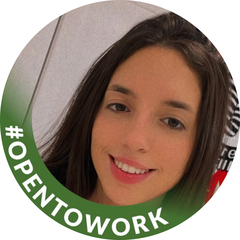

Cecilia Isola Garcia
isola_cecilia@hotmail.com
+55 11 998104321
LinkedIn
Formação Acadêmica
Instituto Mauá de Tecnologia
Sistemas de Informação
02/2022 - 12/2025
Cursos
Java Development Bootcamp - 27 horas - Udemy - ago/2022
Python Bootcamp - 22 horas - Udemy - ago/2022
Estudantes Investidores - 40 horas - IMT - jun/2022
Excel - 12 horas - Udemy - jan/2022
Intercâmbio de Língua Inglesa - ILAC Vancouver - jul/2018
Experiência voluntária ou de Liderança
Coordenação de grupo voluntário - Projeto Horizontes
Voluntária no Projeto Férias Solidárias - Anhembi/SP - jul/2019
Voluntária no Projeto Férias Solidárias - Limeira/SP - jul/2022
Entrar em contato